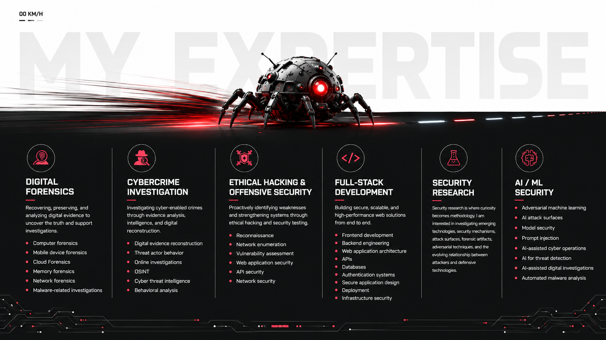

Digital Forensics
Computer, mobile, cloud, memory, network and malware-related investigations.

MY EXPERTISE
Computer, mobile, cloud, memory, network and malware-related investigations.
Digital evidence reconstruction, OSINT, threat intelligence and behavioral analysis.
Reconnaissance, enumeration, vulnerability assessment, web, API and network security.
Frontend, backend, architecture, APIs, databases, authentication, deployment and infrastructure security.
Investigating emerging technologies, security mechanisms, attack surfaces, forensic artifacts and adversarial techniques.
Adversarial ML, AI attack surfaces, model security, prompt injection, AI-assisted cyber operations and automated malware analysis.